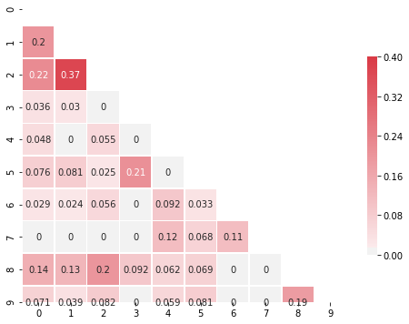
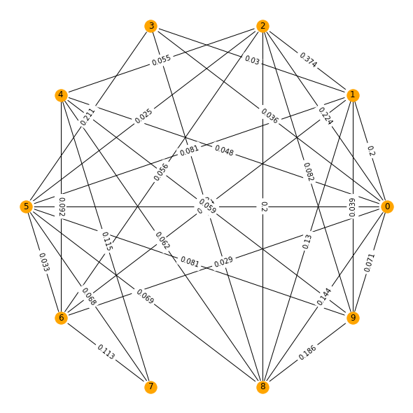

This is the second of a multi part series that details the processes behind FastParliament. You may view the previous post here:
Table of Contents
For this post, I will be focusing on the summarizer component of FastParliament.

Our Parliamentarians tend to speak a fair bit.
From preliminary exploratory analysis on the Hansard, it is probably safe to assume that there would be more, not less content to come in the future. With larger complexities as well as emerging challenges to the governance of the country, there will surely be plenty of things to talk about in the parliament.
Furthermore, it is commonly agreed that people have limited attention spans. Matters of civil society are competing on the same playing field as the latest Korean drama or the antics of a certain orange-haired President.

With those considerations, being able to reduce contents of a text or summarize such that the reader gets the gist of the debate would clearly be advantageous.
Introduction to Summarization
As a generality, summarization consists of two core areas:
Abstractive Summary
In abstractive summary, the summarized text often contain paraphrased representations of the original text.

Abstractive text Extractive Summary
Conversely, extractive summary preserves the content of the text by selecting phrases/sentences that best convey the information - focus on brevity.

Abstractive text


Thus you may have observed that while those two methods are remarkably similar in supposed meaning, they have distinct flavors of summarization.
Abstractive summarization - one in which “new” phrases are being created as a result of semantic parsing of the content, is closely linked to deep learning approaches. Current state of the art abstractive models use a combination of Recurrent Neural Networks (RNNs), Attention Mechanisms, Encoder-Decoder techniques to understand a text AND generate reduced length sentences (summaries) from the long-form text. The generative nature of abstractive summaries generally require large computational resources as well as large datasets to be able to train the generator.
Extractive summarization, on the other hand, is far easier to deploy. The reason being that it is “far easier to select text than it is to generate from scratch”. Furthermore, to even create “understandable” summaries from the hansard debates, it may require computational resource and time beyond what would be alloted for the project.
As such, extractive summarization techniques were selected as a core component for FastParliament’s Summarizer.
Deconstructing Extractive Summarization
In a nutshell below flow outlines the general workflow of extractive summarization.
Walkthrough of Extractive Summarization Process
I will go through a simple conceptualization of one implementation of extractive summarization using the TextRank approach first conceptualised by Rada Mihalcea and Paul Tarau in 2004.
Import Libraries
import re
import datetime
import numpy as np
import pandas as pd
from datetime import date
###
import pymongo
### NLP
import gensim
import spacy
### Custom Utils
from text_utils.metrics import get_chunks_info, get_metric
Extractive Summarization using TextRank
Source : https://www.aclweb.org/anthology/W04-3252
from nltk.corpus import stopwords
import matplotlib.pyplot as plt
import seaborn as sns
import pprint
import networkx as nx
Step 0 : Import in Sample Text
sample_text = mongo_df.iloc[1300].cleaned_join
display(sample_text)
'Mr Lim Biow Chuan asked the Minister for National Development (a) whether a traffic impact assessment had been carried out prior to having the construction staging ground located at Marina East; and (b) when will this temporary staging ground be relocated.<br/>Mr Lawrence Wong: The temporary occupation licence (TOL) for the construction staging ground at Marina East was first issued to LTA in 2014, before activities in the area generated significant traffic impact. In 2016, arising from new TOL applications in the East Coast/Marina Bay area, a joint Traffic Impact Assessment (TIA) was carried out for the TOLs in the East Coast/Marina Bay area, as they share the same access road. The Marina East staging ground is segregated from the existing residential area by East Coast Parkway and East Coast Park. Nevertheless, LTA has adopted measures to minimise dis-amenities to road users in the vicinity. For example, queue bays are provided in the staging ground, and throughput has been enhanced so that heavy vehicles do not overflow into public roads. LTA is also working closely with the developers and contractors in the area to develop localised traffic control plans to improve safety and minimise inconvenience to other road users. These include managing the schedules and routes of heavy vehicles to avoid peak hour traffic and residential areas, where possible. There are also signs to alert motorists to slow down and watch out for heavy vehicles.From a land-use perspective, the Marina East staging ground currently supports LTA’s rail and road infrastructure projects. When these projects are completed, we will review whether to continue the use of this staging ground, in connection with the timing of future development plans for the area. '
Step 1 : Extract Sentences from sample
In this step, we will be splitting the text into sentences by using python’s .split() method. Additionally, we will be doing some pre-processing as part of the process which includes removing stop words as well as stemming.
The function process_text takes in a string of text (or in this case, the document) and then outputs a list of post-processed strings where each item on the list is a processed string.
Furthermore, we will ignore the text at index 0 as this is typically the question statement and we are only interested in responses.
stop_words = set(stopwords.words("english"))
def process_text(text,stopwords = None):
text = text.replace('<br/>',' ')
split_text = text.split('.')
sentences = [sentence for sentence in split_text if len(sentence) > 1]
process_sentences = []
## remove stopwords
for sentence in sentences:
words = sentence.split()
processed_words = [word.lower() for word in words if word not in stopwords]
process_sentences.append(" ".join(processed_words))
return process_sentences[1:]
processed_text = process_text(sample_text,stop_words)
display(processed_text)
['mr lawrence wong: the temporary occupation licence (tol) construction staging ground marina east first issued lta 2014, activities area generated significant traffic impact',
'in 2016, arising new tol applications east coast/marina bay area, joint traffic impact assessment (tia) carried tols east coast/marina bay area, share access road',
'the marina east staging ground segregated existing residential area east coast parkway east coast park',
'nevertheless, lta adopted measures minimise dis-amenities road users vicinity',
'for example, queue bays provided staging ground, throughput enhanced heavy vehicles overflow public roads',
'lta also working closely developers contractors area develop localised traffic control plans improve safety minimise inconvenience road users',
'these include managing schedules routes heavy vehicles avoid peak hour traffic residential areas, possible',
'there also signs alert motorists slow watch heavy vehicles',
'from land-use perspective, marina east staging ground currently supports lta’s rail road infrastructure projects',
'when projects completed, review whether continue use staging ground, connection timing future development plans area']
Step 2 : Vectorizing our Text
In this step, the sentences are then converted to Term-Frequency Inverse Document Frequency (TF-IDF). TF-IDF is used in this case over the Bag of Words (BoW) approach to penalise frequently occuring words within the same text. In plain speak, it’s similar to assigning weights over the occurances of a certain word. If the word occurs more frequently, then the value is lower. Likewise, rarely accuring words are then given higher values.
from sklearn.feature_extraction.text import TfidfVectorizer
vectorizer = TfidfVectorizer()
sent_vectors = vectorizer.fit_transform(processed_text)
To better understand what is happening below the hood, a dataframe containing the vectors mapped to their associated word is shown below.
pd.DataFrame(sent_vectors.todense().tolist(),columns=vectorizer.get_feature_names())
| 2014 | 2016 | access | activities | adopted | alert | also | amenities | applications | area | ... | traffic | use | users | vehicles | vicinity | watch | when | whether | wong | working | |
|---|---|---|---|---|---|---|---|---|---|---|---|---|---|---|---|---|---|---|---|---|---|
| 0 | 0.235868 | 0.00000 | 0.00000 | 0.235868 | 0.000000 | 0.000000 | 0.000000 | 0.000000 | 0.00000 | 0.140063 | ... | 0.155963 | 0.000000 | 0.000000 | 0.000000 | 0.000000 | 0.000000 | 0.000000 | 0.000000 | 0.235868 | 0.000000 |
| 1 | 0.000000 | 0.19567 | 0.19567 | 0.000000 | 0.000000 | 0.000000 | 0.000000 | 0.000000 | 0.19567 | 0.232386 | ... | 0.129383 | 0.000000 | 0.000000 | 0.000000 | 0.000000 | 0.000000 | 0.000000 | 0.000000 | 0.000000 | 0.000000 |
| 2 | 0.000000 | 0.00000 | 0.00000 | 0.000000 | 0.000000 | 0.000000 | 0.000000 | 0.000000 | 0.00000 | 0.160048 | ... | 0.000000 | 0.000000 | 0.000000 | 0.000000 | 0.000000 | 0.000000 | 0.000000 | 0.000000 | 0.000000 | 0.000000 |
| 3 | 0.000000 | 0.00000 | 0.00000 | 0.000000 | 0.346693 | 0.000000 | 0.000000 | 0.346693 | 0.00000 | 0.000000 | ... | 0.000000 | 0.000000 | 0.294720 | 0.000000 | 0.346693 | 0.000000 | 0.000000 | 0.000000 | 0.000000 | 0.000000 |
| 4 | 0.000000 | 0.00000 | 0.00000 | 0.000000 | 0.000000 | 0.000000 | 0.000000 | 0.000000 | 0.00000 | 0.000000 | ... | 0.000000 | 0.000000 | 0.000000 | 0.216402 | 0.000000 | 0.000000 | 0.000000 | 0.000000 | 0.000000 | 0.000000 |
| 5 | 0.000000 | 0.00000 | 0.00000 | 0.000000 | 0.000000 | 0.000000 | 0.222823 | 0.000000 | 0.00000 | 0.155651 | ... | 0.173319 | 0.000000 | 0.222823 | 0.000000 | 0.000000 | 0.000000 | 0.000000 | 0.000000 | 0.000000 | 0.262117 |
| 6 | 0.000000 | 0.00000 | 0.00000 | 0.000000 | 0.000000 | 0.000000 | 0.000000 | 0.000000 | 0.00000 | 0.000000 | ... | 0.188798 | 0.000000 | 0.000000 | 0.212354 | 0.000000 | 0.000000 | 0.000000 | 0.000000 | 0.000000 | 0.000000 |
| 7 | 0.000000 | 0.00000 | 0.00000 | 0.000000 | 0.000000 | 0.357395 | 0.303819 | 0.000000 | 0.00000 | 0.000000 | ... | 0.000000 | 0.000000 | 0.000000 | 0.265806 | 0.000000 | 0.357395 | 0.000000 | 0.000000 | 0.000000 | 0.000000 |
| 8 | 0.000000 | 0.00000 | 0.00000 | 0.000000 | 0.000000 | 0.000000 | 0.000000 | 0.000000 | 0.00000 | 0.000000 | ... | 0.000000 | 0.257492 | 0.000000 | 0.000000 | 0.000000 | 0.000000 | 0.000000 | 0.000000 | 0.000000 | 0.000000 |
| 9 | 0.000000 | 0.00000 | 0.00000 | 0.000000 | 0.000000 | 0.000000 | 0.000000 | 0.000000 | 0.00000 | 0.169831 | ... | 0.000000 | 0.243123 | 0.000000 | 0.000000 | 0.000000 | 0.000000 | 0.285997 | 0.285997 | 0.000000 | 0.000000 |
10 rows × 109 columns
Step 3 : Build Similarity Matrix
In this step, a similarity matrix is created by applying a dot product with the sentence vector and its transpose.
sim_matrix = np.round(np.dot(sent_vectors, sent_vectors.T).A,3)
Again, we display this matrix as part of a correlation table.
corr = pd.DataFrame(columns=range(len(processed_text)),index=range(len(processed_text)),data=sim_matrix)
display(corr)
| 0 | 1 | 2 | 3 | 4 | 5 | 6 | 7 | 8 | 9 | |
|---|---|---|---|---|---|---|---|---|---|---|
| 0 | 1.000 | 0.200 | 0.224 | 0.036 | 0.048 | 0.076 | 0.029 | 0.000 | 0.144 | 0.071 |
| 1 | 0.200 | 1.000 | 0.374 | 0.030 | 0.000 | 0.081 | 0.024 | 0.000 | 0.130 | 0.039 |
| 2 | 0.224 | 0.374 | 1.000 | 0.000 | 0.055 | 0.025 | 0.056 | 0.000 | 0.200 | 0.082 |
| 3 | 0.036 | 0.030 | 0.000 | 1.000 | 0.000 | 0.211 | 0.000 | 0.000 | 0.092 | 0.000 |
| 4 | 0.048 | 0.000 | 0.055 | 0.000 | 1.000 | 0.000 | 0.092 | 0.115 | 0.062 | 0.059 |
| 5 | 0.076 | 0.081 | 0.025 | 0.211 | 0.000 | 1.000 | 0.033 | 0.068 | 0.069 | 0.081 |
| 6 | 0.029 | 0.024 | 0.056 | 0.000 | 0.092 | 0.033 | 1.000 | 0.113 | 0.000 | 0.000 |
| 7 | 0.000 | 0.000 | 0.000 | 0.000 | 0.115 | 0.068 | 0.113 | 1.000 | 0.000 | 0.000 |
| 8 | 0.144 | 0.130 | 0.200 | 0.092 | 0.062 | 0.069 | 0.000 | 0.000 | 1.000 | 0.186 |
| 9 | 0.071 | 0.039 | 0.082 | 0.000 | 0.059 | 0.081 | 0.000 | 0.000 | 0.186 | 1.000 |
And if we wanted to visualise it using seaborn:
# Generate a mask for the upper triangle
mask = np.zeros_like(corr, dtype=np.bool)
mask[np.triu_indices_from(mask)] = True
# Set up the matplotlib figure
f, ax = plt.subplots(figsize=(8, 8))
# Generate a custom diverging colormap
cmap = sns.diverging_palette(220, 10, as_cmap=True)
sns.heatmap(corr, mask=mask, cmap=cmap,annot=True, vmax=0.4, center=0,
square=True, linewidths=.5, cbar_kws={"shrink": .5})

We can already see how sentences are similar to each other just by comparing their positions in their table. For example, we see that sentence 1 and 2 are very similar.
print(f"Sentence 1 : {processed_text[2]}")
print(f"Sentence 2 : {processed_text[3]}")
Sentence 1 : the marina east staging ground segregated existing residential area east coast parkway east coast park
Sentence 2 : nevertheless, lta adopted measures minimise dis-amenities road users vicinity
Step 4 : Create Similarity Graph
Using the TextRank concept, a network graph is created such that each vertex is the sentence represented by its index, and the edges are linked to each other by weights computed by the similarity scores.
The basic idea implemented by a graph-based ranking model is that of “voting”or“recommendation”. When one vertex links to another one,it is basically casting a vote for that other vertex. The higher the number of votes that are cast for a vertex,the higher the importance of the vertex. Moreover, the importance of the vertex casting the vote determines how important the vote itself is,and this information is also taken into account by the ranking model. Hence,the score associated with a vertex is determined based on the votes that are cast for it,and the score of the vertices casting these votes. (Mihalcea & Tarau, 2004)
To compute this graph-derived score which is refered to as TextRank - similar to Google’s PageRank, we import the popular networkx package. With network x, we can visualise the similarity matrix as a graph. And using this, we can see
sentence_similarity_graph = nx.from_numpy_array(sim_matrix)
pos = nx.circular_layout(sentence_similarity_graph)
plt.figure(figsize=(8,8))
plt.figure(1)
nx.draw_circular(sentence_similarity_graph, with_labels = True, node_color="Orange")
edge_labels = nx.get_edge_attributes(sentence_similarity_graph, 'weight')
plt.figure(1)
nx.draw_networkx_edge_labels(sentence_similarity_graph,pos=pos, edge_labels=edge_labels)
plt.show()

scores = nx.pagerank(sentence_similarity_graph)
display(scores)
{0: 0.10594604557676923,
1: 0.10711030046429679,
2: 0.11410080866901795,
3: 0.0893971718098718,
4: 0.09467680498110888,
5: 0.1019626373096041,
6: 0.09218045190228014,
7: 0.09190095545516967,
8: 0.10932632179093772,
9: 0.09339850204094387}
Step 5 : Sorting the Scores
Once we have obtained the scores, we then look at picking the top n sentences that have the highest scores to best represent the text. In this case, we select the top 3 sentences.
original_sentences = [sent for sent in sample_text.replace('<br/>',' ').split('. ') if len(sent)>1]
sorted_sentences = sorted(((scores[idx], sentence) for idx,sentence in enumerate(original_sentences[1:])), reverse=True)
display(sorted_sentences[:3])
[(0.11410080866901795,
'The Marina East staging ground is segregated from the existing residential area by East Coast Parkway and East Coast Park'),
(0.10932632179093772,
'When these projects are completed, we will review whether to continue the use of this staging ground, in connection with the timing of future development plans for the area'),
(0.10711030046429679,
'In 2016, arising from new TOL applications in the East Coast/Marina Bay area, a joint Traffic Impact Assessment (TIA) was carried out for the TOLs in the East Coast/Marina Bay area, as they share the same access road')]
Step 6 : Joining our Extracted Summary and Putting it together
In this step, we will display our Question and Summarised response together to give us a feel of what the end product is.
". ".join([sent[1] for sent in sorted_sentences[:3]])
'The Marina East staging ground is segregated from the existing residential area by East Coast Parkway and East Coast Park. When these projects are completed, we will review whether to continue the use of this staging ground, in connection with the timing of future development plans for the area. In 2016, arising from new TOL applications in the East Coast/Marina Bay area, a joint Traffic Impact Assessment (TIA) was carried out for the TOLs in the East Coast/Marina Bay area, as they share the same access road'
print(f"Question : {original_sentences[0]}")
print(f"\nResponse : {'. '.join([sent[1] for sent in sorted_sentences[0:2]])}.")
Question : Mr Lim Biow Chuan asked the Minister for National Development (a) whether a traffic impact assessment had been carried out prior to having the construction staging ground located at Marina East; and (b) when will this temporary staging ground be relocated
Response : The Marina East staging ground is segregated from the existing residential area by East Coast Parkway and East Coast Park. When these projects are completed, we will review whether to continue the use of this staging ground, in connection with the timing of future development plans for the area.
As you may already see, it is somewhat faithful to the original text. At the same time, it is worth noting that this is a rudimentary implementation of TextRank.
Many variations of TextRank exist which look at various similarity functions and text vectorisation techniques to improve the summarization capability. One such implementation is by Barrios et al, 2016.
This implementation incorporated the following changes to the steps: 1. Choosing Longest Common Substring 2. BM25 Ranking model (variation of TF-IDF model using probabilistic )
Which you can read more in the paper linked above.
Consequentially, this variation is baked into the popular Gensim package. As a result, we can call out this function very easily as you can see below.
Enter Gensim
We can use the summarizer function located in the summarization.summarizer module.
print(gensim.summarization.summarizer.summarize(sample_text.replace('<br/>',''), ratio=0.3,
word_count=None, split=False))
Mr Lim Biow Chuan asked the Minister for National Development (a) whether a traffic impact assessment had been carried out prior to having the construction staging ground located at Marina East; and (b) when will this temporary staging ground be relocated.Mr Lawrence Wong: The temporary occupation licence (TOL) for the construction staging ground at Marina East was first issued to LTA in 2014, before activities in the area generated significant traffic impact.
LTA is also working closely with the developers and contractors in the area to develop localised traffic control plans to improve safety and minimise inconvenience to other road users.
It looks pretty good! This algorithm currently drives the summarizer aspect of FastParliament 😁.
Conclusion
To recap, we have gone through briefly the key areas of summarization. Following that, we went in-depth at a particular approach of extractive text summarization in which we used the TextRank method to determine sentence importance. Lastly, I showed a variant of text rank that FastParliament uses.
For the next part of the writeup, I will be going through the article to article content discovery mechanism that makes use of Doc2Vec. Stay Tuned!